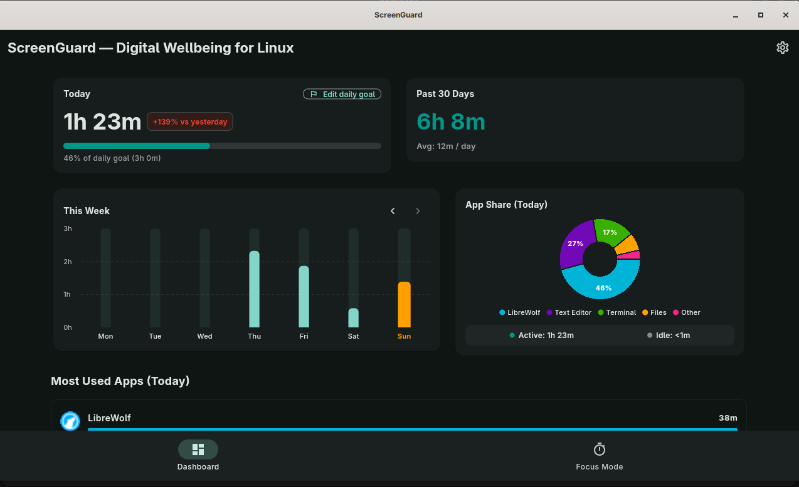
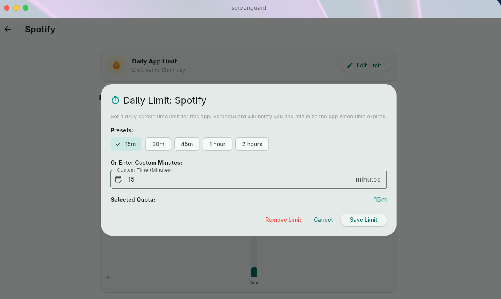
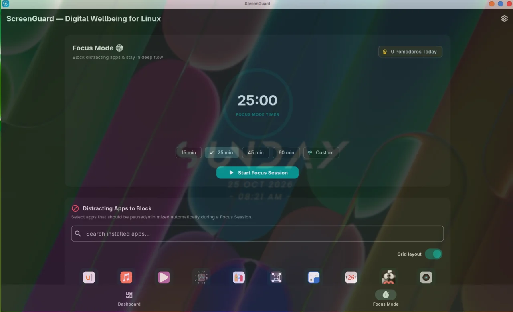
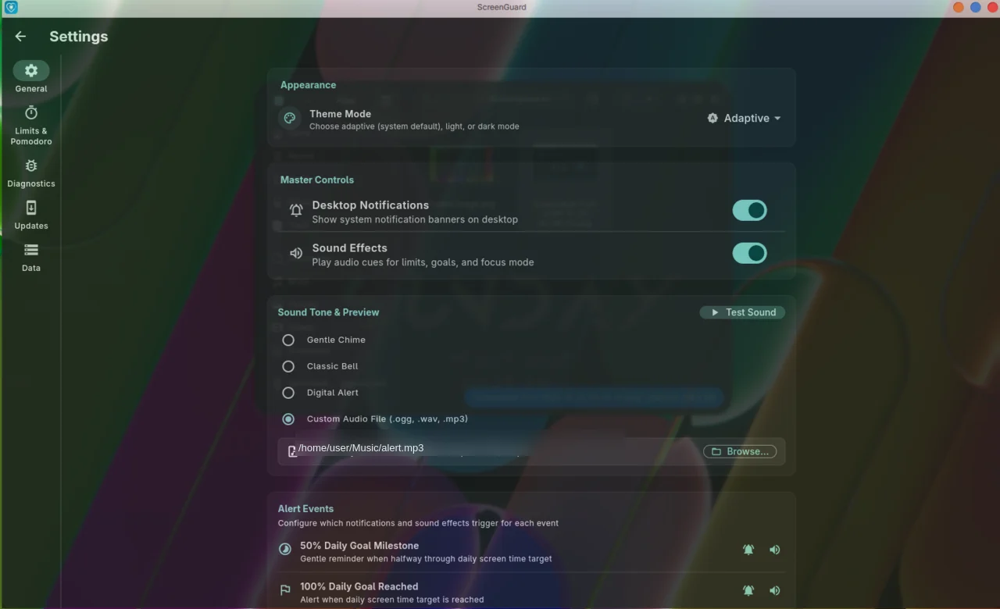
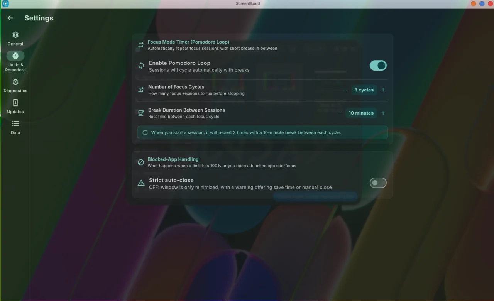
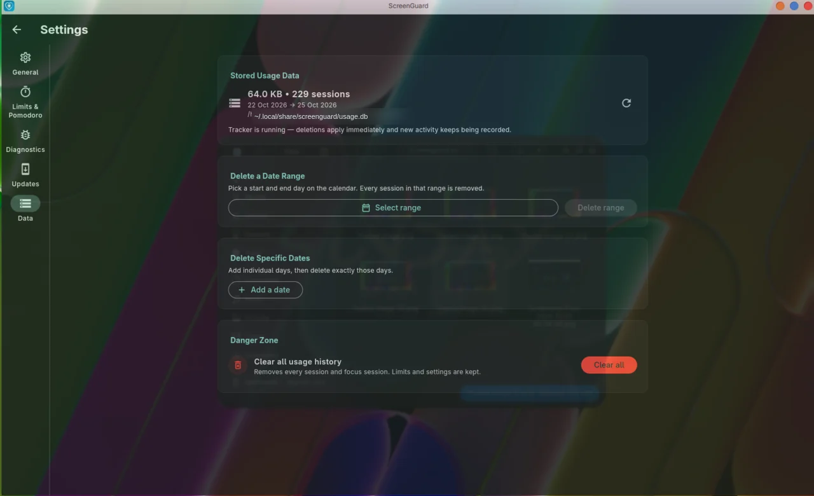

Local-first · No account · No cloud
Know wherethe hours go.
ScreenGuard is a free, local-first digital wellbeing app for Linux. It tracks the apps you actually use, caps the ones that eat your day, and blocks the rest during Focus Mode — natively on GNOME Wayland and every X11 desktop.



A closer look
Not another tracker.A record of your attention.
Screen time is only useful if it changes what you do next. ScreenGuard pairs the record with the enforcement: budgets you set, warnings before you overshoot, and a lockout you can't click past.
-
01
Track what happens
The active window, every minute, recorded in the background by the daemon.
-
02
Set the budget
Presets (30m, 1h, 2h, 4h) or a custom number of minutes, per app, per day.
-
03
Get warned at 90%
A desktop notification arrives while you can still choose to stop.
-
04
Get locked out at 100%
The window is minimized and the lockout screen appears. The day is done.
-
05
Focus on purpose
Pomodoro sessions that minimize — or close — the apps you choose to block.
Day view · Real app
The limit isn't a suggestion
You set an hour.ScreenGuard holds the line.
A limit you can ignore isn't a limit. When an app reaches its daily budget, ScreenGuard minimizes it and puts a lockout screen in front of you — with three honest choices, and no way to pretend it didn't happen.
“Decide once. Let the machine hold the line.”
- 90%A desktop notification, while you can still stop on your own terms.
- 100%The active window is minimized and the lockout screen appears.
- THENAdd 15 minutes or edit the limit — deliberately, not by reflex.
The lockout at 100%. One app, one budget, one honest moment.
Focus Mode. Timer, presets and the distraction app picker.
Focus Mode
Deep work.Enforced, not suggested.
Pomodoro sessions that don't just time you — they remove the things you'd reach for.
- 15 / 25 / 45 / 60-minute presets plus custom, with focus and break cycles
- Pick distracting apps from a searchable grid or list
- Blocked apps are minimized when opened — or closed, with strict auto-close
- Completed focus sessions tracked per day
Settings
Every setting visible.Every byte local.



Theme, notifications, sounds, update channel, diagnostics and data controls in one place. Your database lives at ~/.local/share/screenguard/usage.db (SQLite, WAL mode). Window transparency in these screenshots comes from the Blur My Shell GNOME extension, not from ScreenGuard.
Screenshots
Every screen.No surprises.
Click any image to open it full size. More are in the repository under docs/assets.


Install
Install it likeany other package.
Signed repositories where possible, so updates arrive with your normal package manager. Copy a block and paste it into a terminal.
Ubuntu · Debian · Mint · Pop!_OS · Zorin
APT repository — recommended, receives updates
sudo wget -O /usr/share/keyrings/screenguard.asc https://adityakrishnan005-a11y.github.io/ScreenGuard/apt/key.asc
echo "deb [signed-by=/usr/share/keyrings/screenguard.asc] https://adityakrishnan005-a11y.github.io/ScreenGuard/apt apt main" | sudo tee /etc/apt/sources.list.d/screenguard.list
sudo apt update && sudo apt install screenguardPrefer a single file? Download the .deb and run sudo apt install ./screenguard_1.1.2_amd64.deb.
Fedora · RHEL · Rocky
Copr repository
sudo dnf copr enable the-amibivert/screenguard
sudo dnf install screenguardArch Linux · Manjaro
Signed custom repository
curl -fsSL https://adityakrishnan005-a11y.github.io/ScreenGuard/arch/key.asc -o /tmp/screenguard.asc
sudo pacman-key --add /tmp/screenguard.asc
sudo pacman-key --lsign-key 5E851C89E39A8FD573BF40EAEC671823CA28A37EThen append to /etc/pacman.conf:
[screenguard]
Server = https://adityakrishnan005-a11y.github.io/ScreenGuard/arch/$arch
SigLevel = Required DatabaseRequired TrustedOnlysudo pacman -Sy && sudo pacman -S screenguardAn AUR package is coming once AUR registration reopens.
openSUSE
Tumbleweed and Leap via Open Build Service
sudo zypper addrepo https://download.opensuse.org/repositories/home:/Aditya_K295/openSUSE_Tumbleweed/home:Aditya_K295.repo
sudo zypper refresh && sudo zypper install screenguardOn Leap, swap openSUSE_Tumbleweed for openSUSE_Leap_16.0 or openSUSE_Leap_15.6.
NixOS · Nix
nixpkgs submission in review
nix-shell -E 'let pkgs = import (fetchTarball "https://github.com/adityakrishnan005-a11y/nixpkgs/archive/screenguard.tar.gz") {}; in pkgs.screenguard'Track the upstream nixpkgs PR for the merged package.
Any distribution
Standalone release assets
Grab the latest .deb, .rpm or portable tarball from the releases page, or build from source with Flutter.
xdg-open https://github.com/adityakrishnan005-a11y/ScreenGuard/releases/latestDocumentation
How it works.And how to keep it working.
The short version. Full detail lives in the README.
GUI
Flutter with Material 3. Dashboard, limits, Focus Mode, settings and the lockout overlay.
Daemon
screenguard-daemon runs as a user service, polls the active window and writes to SQLite in WAL mode.
Window source
On GNOME Wayland a bundled Shell extension exports the focused window over D-Bus. On X11, EWMH via xprop and xdotool.
Session support
| Session | Tracking | Limits & Focus |
|---|---|---|
| GNOME Wayland | ✓ bundled extension + AT-SPI | ✓ |
| GNOME X11 | ✓ xprop / xdotool | ✓ |
| KDE, XFCE, MATE, Cinnamon, LXQt, i3 — X11 | ✓ | ✓ |
| Cinnamon experimental Wayland | in progress | in progress |
| KDE Wayland, Sway, Hyprland | not yet — use an X11 session | not yet |
Quick start
-
Launch ScreenGuard
From your applications menu, or run
screenguardin a terminal. -
Start the daemon
It runs in the background and starts with your graphical session.
systemctl --user enable --now screenguard systemctl --user status screenguard -
On GNOME Wayland, enable the extension
This is how ScreenGuard reads the active window. The Debian/Ubuntu/Fedora packages enable accessibility and install it for you; on Arch run the helper script once.
gnome-extensions enable screenguard@screenguard.app -
Set a limit or start a session
Open the dashboard to set a daily limit per app, or switch to Focus Mode and pick what to block.
Data & privacy — the honest version
- Your usage data stays local. Screen time, app names and window titles go into
~/.local/share/screenguard/usage.dband nowhere else. - Anonymous diagnostics are on by default and can be switched off. They send crash traces and one daily “active install” ping: random install ID, version, distro/desktop, display server and channel. No screen-time data, app names, titles, URLs, filenames, usernames or machine identifiers.
- No account, no cloud sync, no ads. Turn diagnostics off in Settings → Diagnostics and nothing leaves the machine at all.
- Updates are yours to control — stable or beta channel, with a configurable check frequency.
FAQ
Things that go wrong.And the fix.
Tracking shows “unknown” on GNOME Wayland
Enable the extension (gnome-extensions enable screenguard@screenguard.app) and make sure toolkit accessibility is on. For sandboxed Flatpak apps, AT-SPI access must be granted — the Debian/Ubuntu/Fedora post-install script handles this; if you installed another way, re-run sudo /usr/share/screenguard/enable_fedora_a11y.sh.
Nothing is tracked on KDE Wayland, Sway or Hyprland
Native Wayland tracking currently targets GNOME only. On KDE and other compositors, log into an X11 session (for example Plasma X11) where ScreenGuard tracks via xprop / xdotool. Native support for other compositors is on the roadmap.
The daemon isn't running
Check systemctl --user status screenguard. If it is inactive, run systemctl --user enable --now screenguard. It needs an active graphical session, so it starts once you are logged in.
How do I reset or move my data?
Stop the daemon with systemctl --user stop screenguard, delete ~/.local/share/screenguard/usage.db*, then relaunch. A fresh database is created on the next start.
How do I update?
Use your package manager — APT, DNF (Copr), the Arch repository and openSUSE all deliver updates. Standalone installs can download the latest asset from the releases page.
Where do I report a bug?
Open a GitHub issue. On X11 problems, attach a screenshot or video plus your desktop environment and version — it makes reproduction much faster.